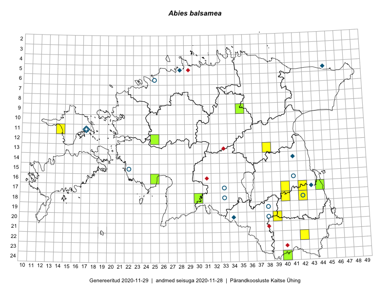

Abies balsamea — palsamnulg
Pinaceae :: Abies balsamea (L.) Mill. (36)

Kaart põhineb 36 kirjel:
vaatlusi 20
herbaareksemplare 16
Taime kaasaegsed ja ajaloolised leiukohad asuvad 26 ruudus.
Tingmärgid ja ruutude arvud periooditi (U1 / V2 )
█ 2006–2020 (14/–)
◆/◇ 1971–2005 (4/9)
○ 1921–1970 (9/3)
+ kuni 1920 (0/0)
× hävinud (–/0)
? kaheldav (–/0)
| Ruut | Leidja(d) | Leiuaeg | Kirje |
|---|---|---|---|
| 11-17 | Haide-Ene Rebassoo | 1957–1984 | ruut/ala: Abies balsamea (L.) Mill. |
| 14-41 | A. Toomel, Maret Kask, Linda Viljasoo | 1977-10-08 | ruut/ala: Abies balsamea (L.) Mill. |
| 17-33 | A. Tamsalu | 1939-07 | ruut/ala: Abies balsamea (L.) Mill. |
| 18-33 | A. Tamsalu | 1939-07–1939-08 | ruut/ala: Abies balsamea (L.) Mill. |
| 19-38 | TRÜ tudengid | 1960 | ruut/ala: Abies balsamea (L.) Mill. |
| 20-34 | H. Krall | 1998-07-28–1998-07-29 | ruut/ala: Abies balsamea (L.) Mill. |
| 20-34 | H. Krall | 1998-07-28–1998-07-29 | ruut/ala: Abies balsamea (L.) Mill. |
| 05-45 | Linda Viljasoo, V. Meriste | 1972-08 | ruut/ala: Abies balsamea (L.) Mill. |
| 20-39 | Malle Leht, Raivo Leht | 2015-07-28 | ruut/ala: Abies balsamea (L.) Mill. |
| 18-40 | Malle Leht | 2015-05-12–2015-05-26 | ruut/ala: Abies balsamea (L.) Mill. |
| 13-38 | Eeva-Maria Jeletsky, Tarmo Niitla | 2015-05-16 | ruut/ala: Abies balsamea (L.) Mill. |
| 13-38 | Eeva-Maria Jeletsky, Tarmo Niitla | 2015-05-16 | ruut/ala: Abies balsamea (L.) Mill. |
| 11-14 | Eeva-Maria Jeletsky, Tarmo Niitla | 2015-06-28 | ruut/ala: Abies balsamea (L.) Mill. |
| 11-14 | Eeva-Maria Jeletsky, Tarmo Niitla | 2015-06-28 | ruut/ala: Abies balsamea (L.) Mill. |
| 24-40 | Eeva-Maria Jeletsky, Tarmo Niitla | 2015-07-25 | ruut/ala: Abies balsamea (L.) Mill. |
| 17-42 | Kirsi Loide, Marje Loide | 2015-04-29–2015-04-29T15:00:00Z | ruut/ala: Abies balsamea (L.) Mill. |
| 18-42 | Kirsi Loide, Marje Loide | 2015-04-30–2015-04-30T15:00:00Z | ruut/ala: Abies balsamea (L.) Mill. |
| 17-42 | Kirsi Loide, Marje Loide | 2015-07-27–2015-07-28 | ruut/ala: Abies balsamea (L.) Mill. |
| 22-42 | Elle Rajandu, Karin Kikas | 2015-05-25 | ruut/ala: Abies balsamea (L.) Mill. |
| 17-40 | Thea Kull | 2019-07-25 | ruut/ala: Abies balsamea (L.) Mill. |
| 06-25 | E. Sits | 1929-07-07 | TAM0051255: Abies balsamea (L.) Mill. |
| 11-17 | K. Eichwald | 1925-06-12 | TU272896: Abies balsamea (L.) Mill. |
| 11-17 | K. Eichwald | 1925-06-12 | TU272897: Abies balsamea (L.) Mill. |
| 16-41 | E. Lundström | 1921-11-06 | TU272898: Abies balsamea (L.) Mill. |
| 17-43 | Ülo Niinemets | 1989-09-01 | TAA0111835: Abies balsamea (L.) Mill. |
| 17-44 | Toomas Kukk | 2006-08-29 | TAA0111836: Abies balsamea (L.) Mill. |
| 15-22 | H. E. Rebassoo | 1955-08-05 | TAA0111837: Abies balsamea (L.) Mill. |
| 11-17 | H. Rebane, H. Rebassoo | 1956-07-02 | TAA0111838: Abies balsamea (L.) Mill. |
| 18-42 | Agnes Ojaveer, V. Hein, Ella Tammemägi | 1960-06-17 | TAA0111839: Abies balsamea (L.) Mill. |
| 20-38 | H. Karu | 1957-08-12 | TAA0111840: Abies balsamea (L.) Mill. |
| 24-40 | Eeva-Maria Jeletsky, Tarmo Niitla | 2015-07-25 | TAA0119356: Abies balsamea (L.) Mill. |
| 09-35 | Indrek Tammekänd | 2017-08-26 | TAA0143777: Abies balsamea (L.) Mill. |
| 12-25 | Peedu Saar | 2018-08-17 | TAA0146864: Abies balsamea (L.) Mill. |
| 18-30 | Indrek Tammekänd | 2018-11-20 | TAA0147644: Abies balsamea (L.) Mill. |
| 18-30 | Indrek Tammekänd | 2018-07-15 | TAA0147776: Abies balsamea (L.) Mill. |
| 16-25 | Indrek Tammekänd | 2019-08-11 | TAA0151910: Abies balsamea (L.) Mill. |
Ruutude arv uue atlase andmekogu järgi. Muuhulgas arvestab vanemat herbaariumi, 2005. aasta atlase välitöölehtedelt uuesti digitaliseeritud andmeid jne. Uue atlase andmekogust pärinevad andmed on kaardile kantud siniste sümbolitega.↩︎
Ruutude arv 2005. aasta atlase (Kukk, T., Kull, T., Eesti taimede levikuatlas. Eesti Maaülikool, Põllumajandus- ja Keskkonnainstituut, Tartu, 2005) järgi. Andmeallikana on kasutatud levik.exe programmi, kus igas ruudus on registreeritud vaid uusim leid. Seetõttu on vanemate perioodide kohta andmed puudulikud. Kasutatud levik.exe andmestikus leidub mõningaid kõrvalekaldeid atlase trükis ilmunud versioonist, sagedamini tarnade ja käpaliste seas. Lisaks leidub selles andmestikus valik liike (peamiselt väheste leidudega tulnuktaimed), mille kaarte trükis ei avaldatud. Vana atlase andmed ruutudest, milles ei ole uue atlase andmekogus leide enne 2006. aastat, on kaardil esitatud punaste sümbolitega. Vana atlase andmetel hävinud ja kaheldavaid leiukohti pole hilisemate (taas)leidude põhjal korrigeeritud.↩︎